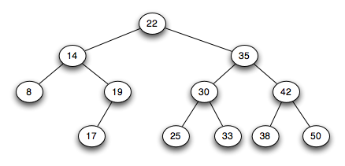

Searching
We consider searching for an element in a collection of data.
Objectives
- Provide an overview of sequential and binary searches
- Contrast the benefits of each searching algorithm
In Class Exercise
Overview
Why might we need to search for an item in an array/list?
For arrays, we essentially have two choices:
(1) Searching through an unsorted array
or
(2) Searching through a sorted array
Unsorted Array
The general idea is we have to use a sequential search.
Consider the array:
115
|
67
|
0
|
-200
|
54
|
99
|
12
|
42
|
-42
|
15
|
How would a sequential search work?
What is the Big-Oh notation of the sequential search for the:
- best case?
- worst case?
- average case?
Sorted Array
We can use a different algorithm if our data is already in sorted
order. Note - this only works for a sorted array.
-200
|
-42
|
0
|
12
|
15
|
42
|
54
|
67
|
99
|
115
|
Ikea-style description.
General Algorithm
// search for desiredItem in elements
binarySearch(elements,
desiredItem)
{
//
calculate midpoint
if
desiredItem == element at midpoint
// we found it!!
else
if desiredItem < element at midpoint
search left side of elements
else
search right side of elements
(This is a recursive algorithm)
Search through a[0] ...
a[n-1] for item
Sketch of Algorithm
midpoint
=
midpoint
between
0
and
(n-1)
if (item == a[mid]) // we
found it!
return true
else if (item < a[mid]) //
search to the left
return the result of searching through a[0]
through a[mid-1]
else if (item > a[mid]) //
search to the right
return the result of searching through a[mid+1]
through a[n-1]
Detailed Java Code
private boolean
binarySearch(int first, int last, T desiredItem)
{
boolean
found;
int
mid = first + (last - first) / 2;
if
(first > last)
found
= false;
else
if (desiredItem.equals(list[mid]))
found
= true;
else
if (desiredItem.compareTo(list[mid]) < 0)
found
= binarySearch(first, mid - 1, desiredItem);
else
found
= binarySearch(mid + 1, last, desiredItem);
return
found;
}
A worksheet
we will go through in class.
Binary Search Trees
An advantage of binary search trees is that we can apply the binary
search when looking for an element:

The shape of the tree can
influence performance.
What is the height of a complete tree with N nodes?
What is the worst case of a complete tree?
What is the worst case with no guarantees of the shape of the tree?